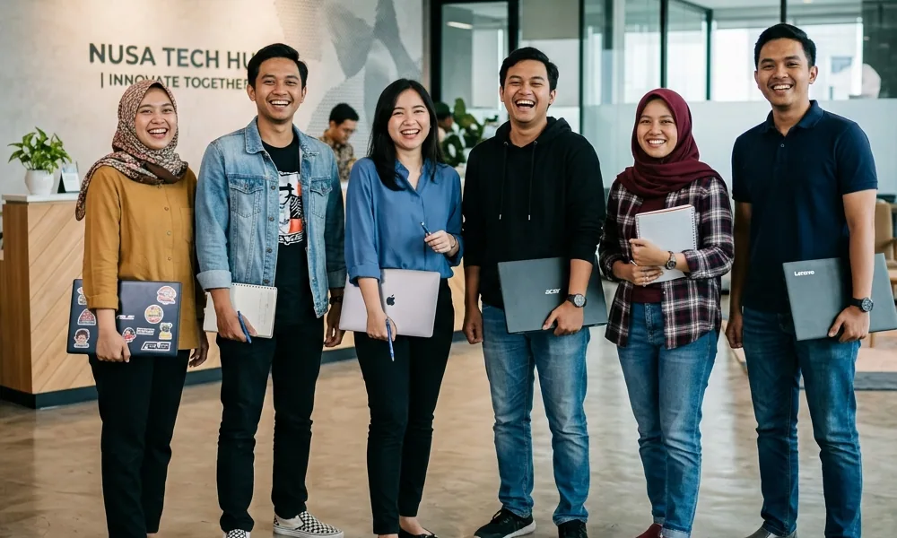
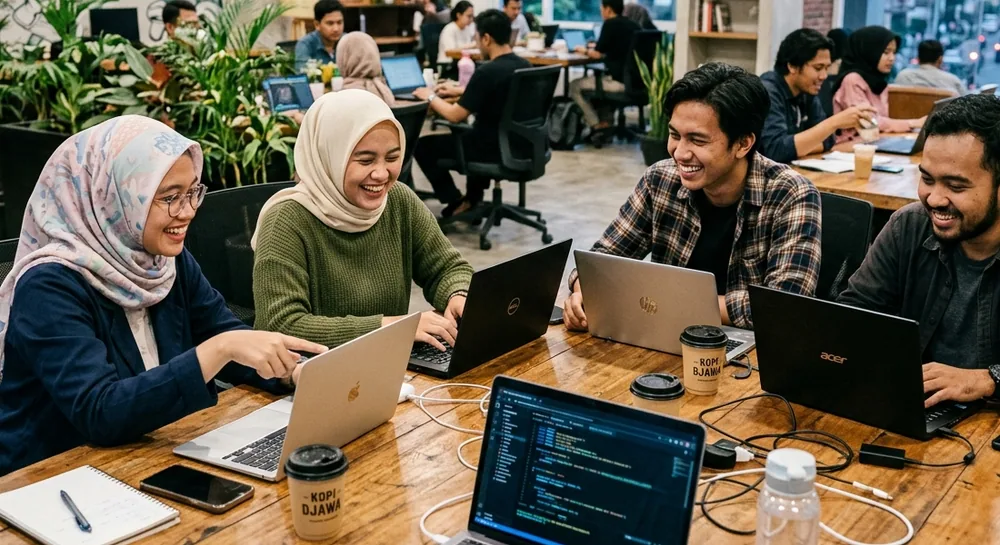
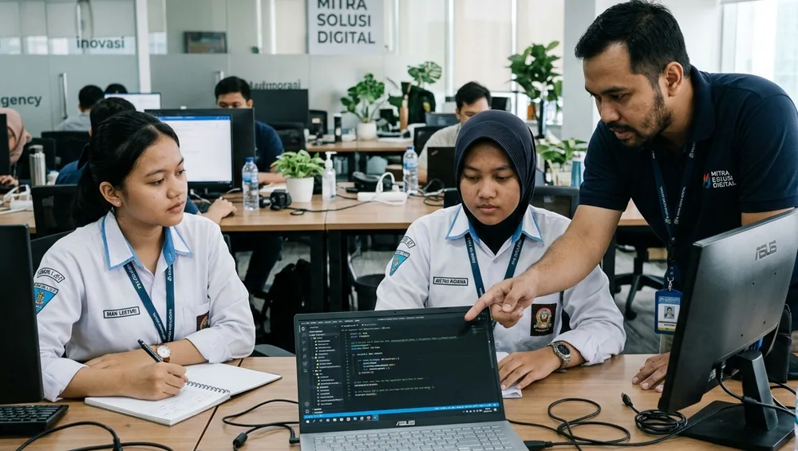
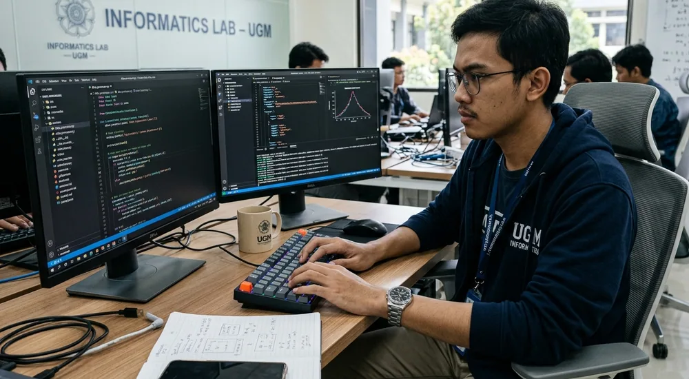

7 Tips Magang Pertama Kali di Bidang Digital agar Tidak Kewalahan
Pertama kali magang sering terasa membingungkan. Tujuh kebiasaan sederhana ini membantu kamu beradaptasi lebih cepat.
Artikel edukasi seputar magang, PKL, skill digital, CV, portofolio, dan persiapan interview.

Pertama kali magang sering terasa membingungkan. Tujuh kebiasaan sederhana ini membantu kamu beradaptasi lebih cepat.

Belum punya pengalaman kerja? Tidak masalah. Begini cara menyusun CV dan portofolio dari project sekolah, kuliah, dan latihan mandiri.

Gugup saat interview itu wajar. Siapkan jawaban untuk pertanyaan umum ini supaya kamu tampil lebih tenang dan percaya diri.

Tidak perlu menguasai semuanya. Mulai dari fondasi ini agar proses belajar saat magang berjalan lebih lancar.
Terapkan tips yang kamu baca lewat program magang dan PKL kami.